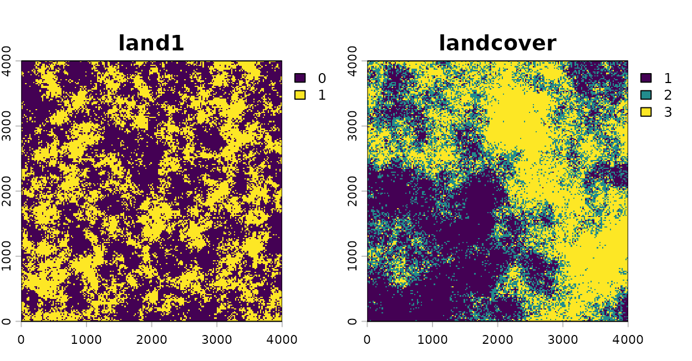
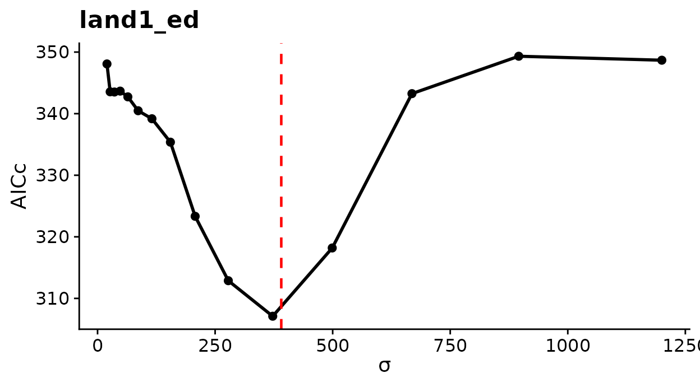
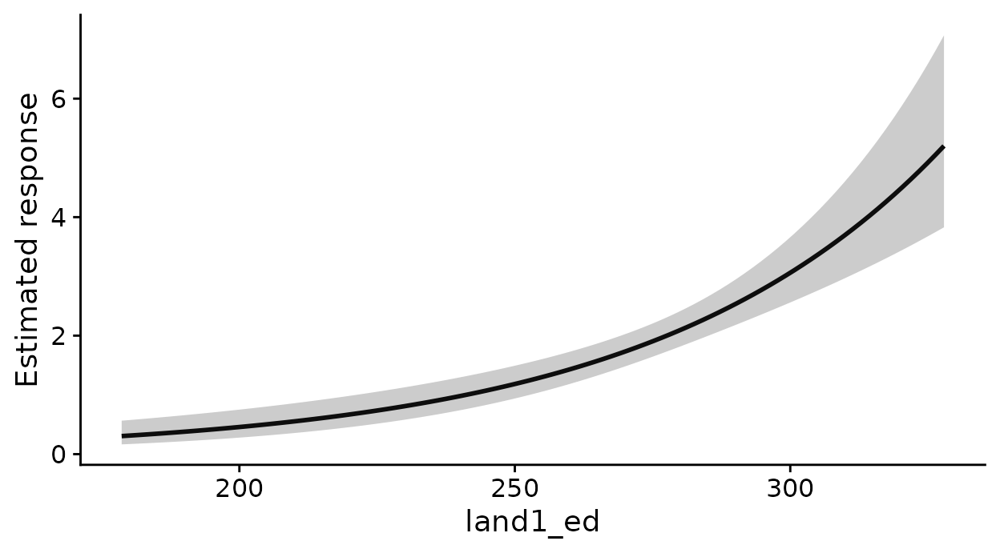
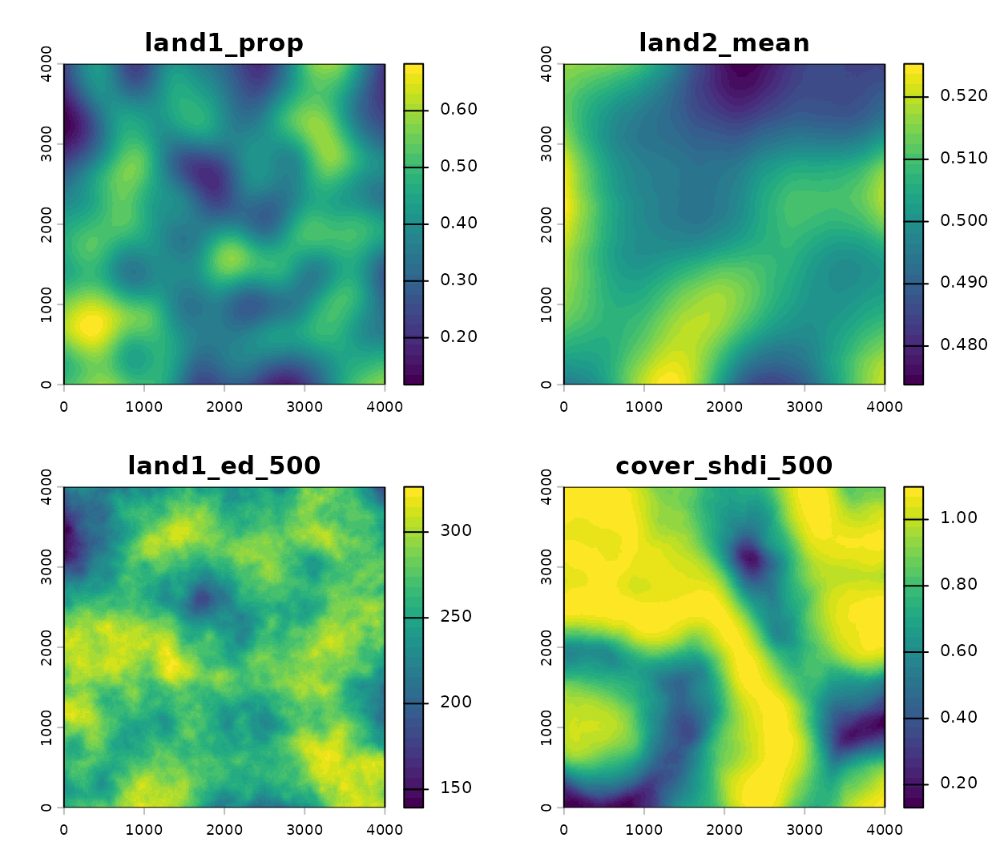
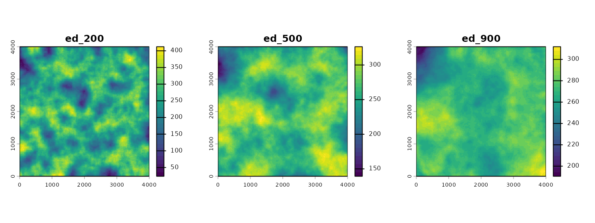
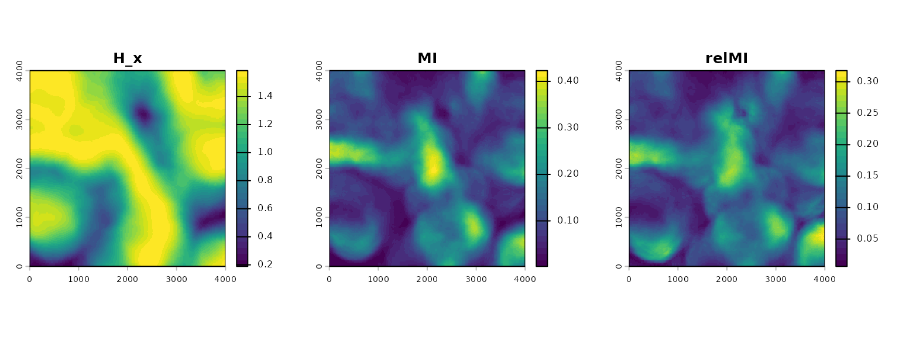
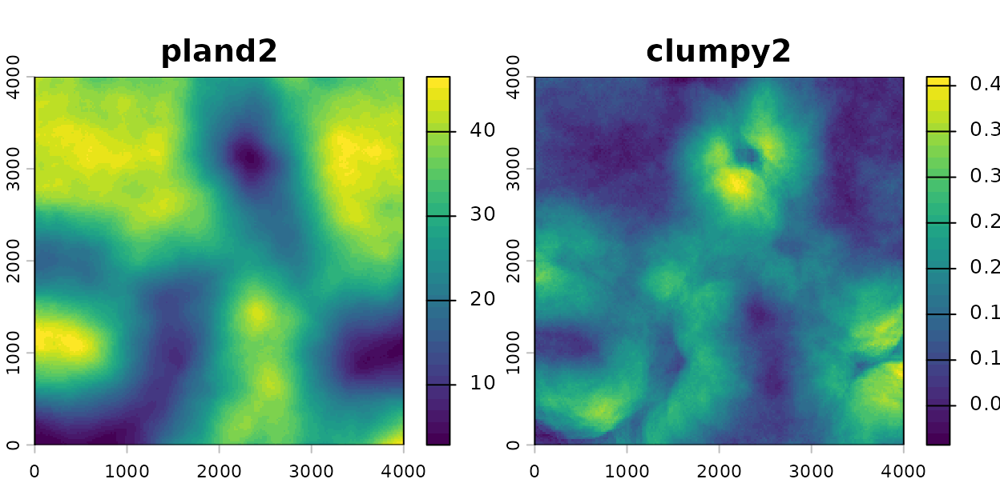

04. Landscape Metrics as Covariates
Bill Peterman
Source:vignettes/v04-landscape-metrics.Rmd
v04-landscape-metrics.RmdWhat this vignette covers
A kernel-weighted mean tells you how much of a cover type surrounds a
survey point. It says nothing about how that cover is arranged, or how
many cover types share the neighborhood. Landscape metrics describe
those properties. landscape_var() computes 25 of them from
a categorical raster, meaning a raster whose cell values are integer
class codes, within a circular buffer around each survey point. Each
metric then enters your model as a covariate.
This vignette shows what each family of metrics measures, which
scales you can fix and which you can estimate, and how to read a fitted
coefficient in the metric’s own units. You will add two metrics to the
count model from
vignette("v01-quickstart", package = "multiScaleR"), then
estimate the buffer radius of a metric from counts simulated with a
known answer. Read the Quick Start first.
vignette("v05-surface-metrics", package = "multiScaleR")
follows the same steps for continuous rasters.
Know what each metric family measures
Every metric summarizes the cells inside a circle around a survey point. The circle has a hard edge, so each cell inside it counts equally and each cell outside it counts for nothing. The table gives the ecological meaning and the units of each family. Units assume a raster whose map units are meters.
| Family | Metrics | What it measures | Units |
|---|---|---|---|
| Composition |
shdi, shei (Shannon diversity
and evenness), sidi, siei (Simpson diversity
and evenness), msidi, msiei (modified Simpson
diversity and evenness), pr, prd,
rpr (patch richness, its density, and its relative form),
ta (total area) |
How many cover types the neighborhood holds and how evenly they share it |
shdi and msidi in log units.
Evenness indices and sidi run from 0 to 1. pr
is a count of classes, prd is classes per 100 ha,
rpr is a percentage, and ta is in
hectares |
| Edge |
ed (edge density), te (total
edge), lsi (landscape shape index) |
How much boundary separates different cover types, which rises as cover breaks into smaller pieces |
ed in meters of edge per hectare,
te in meters, lsi as a unitless ratio |
| Aggregation |
ai (aggregation index), pladj
(proportion of like adjacencies), contag (contagion),
iji (interspersion and juxtaposition) |
Whether cells of one cover type sit next to each other or are mixed among other types | Percentages |
| Information theory |
ent (marginal entropy),
joinent (joint entropy), condent (conditional
entropy), mutinf (mutual information),
relmutinf (relative mutual information) |
How complex the pattern is, split into what is present and how predictable a neighboring cell is | Log units, except relmutinf, which runs
from 0 to 1 |
| Class level |
pland (percentage of landscape),
ca (class area), clumpy (clumpiness
index) |
How much of the neighborhood one focal cover type fills, and how clumped that type is |
pland as a percentage, ca in
hectares, clumpy from -1 (dispersed) through 0 (random) to
1 (clumped) |
Four details apply across the table.
-
Log units.
shdiand the four entropy metrics use the natural logarithm by default, which gives nats. Setbase = 2inlandscape_var()to report them in bits. -
Class-level metrics need a focal class. Supply it
with
class, an integer that matches one of the raster’s class codes. Asking forpland,ca, orclumpywithoutclassis an error, and so is supplyingclassto any other metric. Where the focal class is absent from a buffer,plandandcareturn 0 andclumpyreturnsNA. -
Some metrics need several classes.
contagneeds at least two classes in a buffer andijineeds at least three. With fewer, they returnNA. -
rprneeds a maximum. Setclasses_maxto the number of cover types that could occur.
The information-theory metrics treat the table of adjacent class
pairs as a probability distribution, following Nowosad and Stepinski
(2019). The help page ?msr_vars defines every metric.
Decide which scales to fix and which to estimate
The scale of a covariate is the distance over which the landscape is
summarized. For a landscape metric that distance is the buffer radius.
The radius argument decides whether you fix it or estimate
it, and the choice is open for all 25 metrics.
| How you write the covariate | What sets the scale | What multiScale_optim() reports |
|---|---|---|
landscape_var("cover", metric = "ed", radius = 500) |
You do. The metric is computed once within 500 map units | No scale. The metric is an ordinary covariate |
landscape_var("cover", metric = "ed") |
The data. The radius is estimated with the model | The radius, without a standard error.
Profile-likelihood limits come from
summary(fit, profile = TRUE)
|
kernel_var("cover") |
The data. The kernel width, sigma, is estimated with the model | Sigma with a standard error and confidence interval |
A landscape metric has no kernel-weighted form. Its estimated scale
is always a hard radius, and the likelihood changes in small steps as
cells enter the buffer. That is why no standard error is reported for
it. Estimating a radius uses the default backend = "refit"
of multiScale_optim().
What this means for your study. Fix the radius when you have a biological reason for a distance, such as a home-range radius. Estimate it when the scale is itself the question, and report the profile-likelihood limits with it.
Work through an example
Load the data
The example uses the counts, survey points, and raster from the Quick
Start. The counts were simulated to respond to the kernel-weighted mean
of land1 (sigma of 250 m, effect of -0.5) and of
land2 (sigma of 500 m, effect of 0.7). No landscape metric
entered the simulation.
data("landscape_counts") # data frame: counts and one site-level covariate
dat <- landscape_counts
data("surv_pts") # survey locations (an sf object from the package)
pts <- vect(surv_pts) # convert to a terra SpatVector
# Three landscape layers on one grid, in meters
land_rast <- rast(system.file("extdata", "landscape.tif",
package = "multiScaleR"))land1 is a binary habitat layer, which already counts as
a categorical raster. To have a layer with more than two cover types,
cut the continuous land3 layer into three classes. In your
own analysis this would be a mapped land-cover product.
# Class 1 below 0.45, class 2 from 0.45 to 0.55, class 3 above 0.55
landcover <- classify(
land_rast$land3,
rcl = matrix(c(-Inf, 0.45, 1,
0.45, 0.55, 2,
0.55, Inf, 3),
ncol = 3, byrow = TRUE)
)
names(landcover) <- "landcover"
# The source layers for this example, on one grid
metric_rasters <- c(land_rast$land1, land_rast$land2, landcover)
The binary habitat layer and the three-class land-cover layer.
Define the covariates
msr_vars() names each model covariate and says how to
derive it from a source layer. One source layer can supply several
covariates. Here land1 supplies both a kernel-weighted
proportion of habitat and an edge density.
scale_vars <- msr_vars(
land1_prop = kernel_var("land1"), # proportion of habitat, sigma estimated
land2_mean = kernel_var("land2"), # mean of land2, sigma estimated
land1_ed_500 = landscape_var("land1", metric = "ed",
radius = 500), # edge density within 500 m
cover_shdi_500 = landscape_var("landcover", metric = "shdi",
radius = 500) # Shannon diversity within 500 m
)
scale_vars[, c("covariate", "source", "type", "metric", "radius", "optimize")]
#> multiScaleR variable specifications:
#> covariate source type metric radius optimize
#> land1_prop land1 kernel <NA> NA TRUE
#> land2_mean land2 kernel <NA> NA TRUE
#> land1_ed_500 land1 landscape ed 500 FALSE
#> cover_shdi_500 landcover landscape shdi 500 FALSEHow to read the output: Each row is one model
covariate. source is the raster layer it comes from.
optimize is TRUE for the two kernel
covariates, whose sigma will be estimated, and FALSE for
the two metrics, whose radius is fixed at 500 m.
Compute the metrics at the survey points
Pass the specification to kernel_prep() through
scale_vars. It extracts the cells within max_D
of each point and computes every covariate.
kernel_inputs <- kernel_prep(
pts = pts, # survey locations
raster_stack = metric_rasters, # source layers named in scale_vars
max_D = 1700, # largest distance (m) considered
kernel = "gaussian", # kernel for the two kernel covariates
scale_vars = scale_vars,
verbose = FALSE
)
# Mean and standard deviation of each covariate, in its own units
round(sapply(kernel_inputs$scl_params, function(x) x), 3)
#> mean sd
#> land1_prop 0.409 0.019
#> land2_mean 0.501 0.006
#> land1_ed_500 269.727 22.066
#> cover_shdi_500 0.838 0.223How to read the output:
kernel_inputs$kernel_dat holds the covariates after
centering and scaling, which is what the model uses.
scl_params keeps the mean and standard deviation that were
removed, in the units of each metric. Edge density of land1
averages 270 m of edge per hectare across the survey points, with a
standard deviation of 22 m/ha. Shannon diversity averages 0.84 with a
standard deviation of 0.22. For three classes its largest possible value
is log(3), about 1.10. The rows for the two kernel
covariates are provisional, because they were computed at a starting
sigma.
kernel_prep() stops with an error when a metric takes
the same value at every survey point, because a constant cannot be
scaled or used as a covariate. Patch richness within 500 m does that
here, since every buffer holds all three classes.
Fit the model
Fit the starting model with the derived covariates, then let
multiScale_optim() estimate the two kernel scales. The two
metrics were computed once and stay as they are.
df <- data.frame(dat, kernel_inputs$kernel_dat)
# Starting model: formula and family carry through to the optimizer
mod <- glm(counts ~ site + land1_prop + land2_mean +
land1_ed_500 + cover_shdi_500,
family = poisson(),
data = df)
# Estimate sigma for land1_prop and land2_mean
opt <- multiScale_optim(fitted_mod = mod,
kernel_inputs = kernel_inputs,
verbose = FALSE)Read the estimated scale
summary(opt)
#>
#> Call:
#> multiScale_optim(fitted_mod = mod, kernel_inputs = kernel_inputs,
#> verbose = FALSE)
#>
#>
#> Kernel used:
#> gaussian
#>
#> ***** Optimized Scale of Effect *****
#>
#> Mean SE 2.5% 97.5%
#> land1_prop 232.7615 36.22955 160.8269 304.6961
#> land2_mean 501.4688 48.32622 405.5159 597.4216
#>
#>
#> ====================================
#>
#> ***** Optimized Scale of Effect -- Distance *****
#> Scale distances (map units) at 90%, two definitions.
#>
#> 2D, radius of the circle for the ideal untruncated kernel (selected):
#> Mean 2.5% 97.5%
#> land1_prop 499.50 345.13 653.87
#> land2_mean 1076.14 870.22 1282.05
#>
#> 1D, along a line through the point (comparison):
#> Mean 2.5% 97.5%
#> land1_prop 382.86 264.54 501.18
#> land2_mean 824.84 667.01 982.67
#>
#>
#> ====================================
#>
#> ***** Fitted Model Summary *****
#>
#>
#> Call:
#> glm(formula = counts ~ site + land1_prop + land2_mean + land1_ed_500 +
#> cover_shdi_500, family = poisson(), data = data)
#>
#> Coefficients:
#> Estimate Std. Error z value Pr(>|z|)
#> (Intercept) 0.39203 0.09107 4.305 1.67e-05 ***
#> site 0.17647 0.08303 2.125 0.0336 *
#> land1_prop -0.45757 0.09636 -4.748 2.05e-06 ***
#> land2_mean 0.61226 0.07664 7.988 1.37e-15 ***
#> land1_ed_500 -0.05000 0.09122 -0.548 0.5836
#> cover_shdi_500 -0.03718 0.07639 -0.487 0.6264
#> ---
#> Signif. codes: 0 '***' 0.001 '**' 0.01 '*' 0.05 '.' 0.1 ' ' 1
#>
#> (Dispersion parameter for poisson family taken to be 1)
#>
#> Null deviance: 224.24 on 99 degrees of freedom
#> Residual deviance: 109.20 on 94 degrees of freedom
#> AIC: 317.87
#>
#> Number of Fisher Scoring iterations: 5
#>
#>
#>
#> ***** Follow-up recommendation *****
#> Recommended `max_D`: 1700
#> Recommended starting `sigma` values:
#> land1_prop land2_mean
#> 232.7615 501.4688
#>
#> Action:
#> Use the optimized parameters as efficient starting values if refitting.How to read the summary() output: The
scale tables list only the two kernel covariates. Sigma for
land1_prop is 233 m, with a 95% interval of 161 to 305 m
that contains the true 250 m. Sigma for land2_mean is 501
m, against a true 500 m. The distance table converts each sigma to the
radius that holds 90% of the kernel weight, which is 500 m for
land1_prop and 1076 m for land2_mean. Edge
density and Shannon diversity are absent from the scale tables because
you set their radius. They appear only in the regression table, as
ordinary covariates measured within 500 m.
Interpret a coefficient in the metric’s units
The regression coefficients are on the log scale, because the model is Poisson with a log link. Each one describes a change of one standard deviation, because the covariates were standardized. Two steps turn a coefficient into a statement about the metric. Divide by the metric’s standard deviation to get the effect of one unit, then exponentiate to get a multiplicative change in the expected count.
beta <- coef(opt$opt_mod) # log scale, per one standard deviation
ci <- confint.default(opt$opt_mod) # Wald 95% limits, log scale
sds <- opt$scl_params$sd # one standard deviation, in metric units
# A step that is easy to picture, in the units of each metric
step <- c(land1_ed_500 = 10, # 10 m more edge per hectare
cover_shdi_500 = 0.1) # 0.1 more Shannon diversity
m <- names(step)
effect <- data.frame(
Covariate = m,
SD = sds[m],
Step = step,
Multiplier = exp(beta[m] * step / sds[m]), # change in expected count
Lower = exp(ci[m, 1] * step / sds[m]),
Upper = exp(ci[m, 2] * step / sds[m])
)
knitr::kable(effect, digits = 3, row.names = FALSE)| Covariate | SD | Step | Multiplier | Lower | Upper |
|---|---|---|---|---|---|
| land1_ed_500 | 22.066 | 10.0 | 0.978 | 0.902 | 1.060 |
| cover_shdi_500 | 0.223 | 0.1 | 0.983 | 0.920 | 1.052 |
How to read the table: Multiplier is
the factor by which the expected count changes when the metric rises by
Step, with the other covariates held constant. An increase
of 10 m/ha in edge density within 500 m multiplies the expected count by
0.98, with a 95% interval of 0.90 to 1.06. An increase of 0.1 in Shannon
diversity multiplies it by 0.98 (0.92 to 1.05). Both intervals include
1, which means no change. That is the right answer here, because neither
metric was used to simulate the counts. The intervals treat the
estimated sigma values as known, as explained in
vignette("v09-estimates-and-intervals", package = "multiScaleR").
Estimate the scale of a metric
The running example has no metric effect to recover, so this section
simulates one. The counts below respond to edge density of
land1 within 400 m, with an effect of 0.5 on the log scale
for each standard deviation of edge density.
# Edge density within 400 m, the scale used to simulate the counts
truth_inputs <- kernel_prep(
pts = pts,
raster_stack = land_rast["land1"],
max_D = 1200,
scale_vars = msr_vars(ed_400 = landscape_var("land1", metric = "ed",
radius = 400)),
verbose = FALSE
)
set.seed(1)
# kernel_dat is standardized, so 0.5 is the effect of one standard deviation
sim_counts <- rpois(100, exp(0.5 + 0.5 * truth_inputs$kernel_dat$ed_400))To estimate the radius, leave radius out of
landscape_var(). Everything else is the usual workflow.
# No radius: the buffer radius becomes a parameter of the model
free_vars <- msr_vars(land1_ed = landscape_var("land1", metric = "ed"))
free_inputs <- kernel_prep(
pts = pts,
raster_stack = land_rast["land1"],
max_D = 1200, # the radius is searched up to this distance
scale_vars = free_vars,
verbose = FALSE
)
sim_df <- data.frame(counts = sim_counts, free_inputs$kernel_dat)
sim_mod <- glm(counts ~ land1_ed, family = poisson(), data = sim_df)
sim_opt <- multiScale_optim(fitted_mod = sim_mod,
kernel_inputs = free_inputs,
verbose = FALSE)
# Radius with profile-likelihood limits, in meters
sim_scale <- summary(sim_opt, profile = TRUE)$opt_scale
round(sim_scale, 1)
#> Mean SE 2.5% 97.5%
#> land1_ed 390.7 NA 339.9 416.2How to read the output: Mean is the
estimated buffer radius, 391 m, against the 400 m used to simulate the
counts. SE is NA because the likelihood
changes in steps along a hard radius, so the usual standard error is not
computed. The limits come from the profile likelihood and run from 340
to 416 m. A radius is already a distance, so it needs no conversion to
an effective distance.
# Refit the model at 15 candidate radii
plot(profile_sigma(sim_opt, n_pts = 15, verbose = FALSE))
AICc across candidate radii for edge density. The dashed line marks the estimate.
How to read this plot: Lower AICc means better support. The horizontal axis is labeled sigma, which for a landscape metric is the buffer radius in meters. A single deep trough near the dashed line means the data identify the radius. A hard-radius profile can also show small bumps, because the metric changes each time a cell enters the buffer. Judge the profile by its overall shape.
Interpret the coefficient as before. The standard deviation now belongs to edge density at the estimated radius.
sim_beta <- coef(sim_opt$opt_mod)["land1_ed"] # per standard deviation
sim_ci <- confint.default(sim_opt$opt_mod)["land1_ed", ]
sim_sd <- sim_opt$scl_params$sd["land1_ed"] # m/ha at the fitted radius
# Change in expected count for 10 m more edge per hectare
sim_effect <- exp(c(Estimate = unname(sim_beta), Lower = sim_ci[[1]],
Upper = sim_ci[[2]]) * 10 / sim_sd)
round(sim_effect, 3)
#> Estimate Lower Upper
#> 1.209 1.141 1.282
# The value used in the simulation, on the same footing
round(exp(0.5 * 10 / truth_inputs$scl_params$sd["ed_400"]), 3)
#> ed_400
#> 1.199How to read the output: Within the estimated radius, each additional 10 m of edge per hectare multiplies the expected count by 1.21, an increase of 21%. The 95% interval runs from 1.14 to 1.28 and contains the simulated value on the last line.
plot_marginal_effects(sim_opt)
Expected count across the observed range of edge density at the estimated radius.
How to read this plot: The horizontal axis is edge density in m/ha, not the standardized covariate, so you can read expected counts directly against the metric. The shaded band is a 95% confidence band for the expected count that treats the estimated radius as known.
What this means for your study. Changing the radius of a landscape metric changes the quantity, not only its smoothness. Edge density within 200 m and within 900 m are different covariates with different ranges, so compare coefficients only after converting each to the metric’s units at its own radius.
Estimating a radius costs more than estimating a kernel sigma,
because the metric is recomputed for every survey point at each
candidate radius. Settle the model structure with fixed radii first.
Before you estimate a radius for iji, siei, or
msiei, compute the metric at a few fixed radii and confirm
that it varies among survey points. These metrics can be NA
or nearly constant when buffers hold too few classes or too few
boundaries between classes.
Search a list of radii
The optimizer above searches the radius continuously. You can instead
name the radii to compare, such as distances that match the home-range
sizes of your species, and refit the model at each one. Pass them to
radius_grid with the default refit backend.
This search is experimental.
# Refit the model at nine radii from 200 to 1,000 m
grid_fit <- multiScale_optim(sim_mod, free_inputs, backend = "refit",
radius_grid = seq(200, 1000, by = 100),
verbose = FALSE)
radii <- diagnostics(grid_fit)$radius_profile
radii[, c("radius", "log_likelihood", "status", "selected")]
#> radius log_likelihood status selected
#> 1 200 -158.8641 scored FALSE
#> 2 300 -152.9993 scored FALSE
#> 3 400 -150.1444 scored TRUE
#> 4 500 -156.1350 scored FALSE
#> 5 600 -163.6469 scored FALSE
#> 6 700 -169.6161 scored FALSE
#> 7 800 -170.9700 scored FALSE
#> 8 900 -171.5316 scored FALSE
#> 9 1000 -171.4920 scored FALSEHow to read the output: Each row is one candidate
radius and the log-likelihood of the model refitted there. Higher is
better. selected marks the best row, 400 m, and
status would name the reason if a refit failed. The
neighboring radii of 300 and 500 m fit worse by 2.9 and 6.0
log-likelihood units, so the data clearly favor 400 m, the radius used
to simulate the counts. A flat run of rows means the data barely
distinguish those radii. A best row at either end of the list means the
search should extend further. The grid gives no standard error or
interval for the radius.
For several metrics with estimated radii, pass a named list with one
vector per covariate, for example
radius_grid = list(diversity = c(250, 500, 750), edge = c(300, 500, 900)).
Every combination is fitted, nine in that case, and any kernel sigma in
the same model is re-estimated at each. The best radius for one metric
can depend on the radius of the other, which is why they are searched
together. The same argument works for a step-selection model, and
vignette("v08-cross-validation", package = "multiScaleR")
shows how to repeat the search inside cross-validation folds.
Map the metrics
Map the covariates of a fitted model
kernel_scale.raster() applies each covariate definition
to the whole raster. Given a fitted model, it uses the estimated sigma
for kernel covariates and the stated radius for fixed-radius
metrics.
projected <- kernel_scale.raster(raster_stack = metric_rasters,
multiScaleR = opt, # the fitted object
verbose = FALSE)
names(projected)
#> [1] "land1_prop" "land2_mean" "land1_ed_500" "cover_shdi_500"
#> [5] "site"
plot(projected[[1:4]])
The covariates of the fitted model, in their own units.
How to read these plots: Each layer carries the name
of a model covariate and is in that covariate’s units.
land1_prop is a proportion of habitat,
land1_ed_500 is meters of edge per hectare, and
cover_shdi_500 is Shannon diversity. Diversity is highest
along the band where the three cover classes meet and lowest inside the
large blocks of a single class. The fifth layer, site, is a
constant zero. site was measured at the survey points and
has no raster, so the function adds a placeholder to let the stack go
straight to terra::predict().
To predict from the model, add scale_center = TRUE so
the layers are standardized as the model’s covariates were, and
clamp = TRUE to stay inside the fitted range.
vignette("v03-map-predictions", package = "multiScaleR")
covers prediction maps.
Map a metric without a model
You do not need a fitted model to map a metric. Pass a specification in which every covariate has a fixed radius.
ed_multi <- kernel_scale.raster(
raster_stack = metric_rasters["land1"],
scale_vars = msr_vars(
ed_200 = landscape_var("land1", metric = "ed", radius = 200),
ed_500 = landscape_var("land1", metric = "ed", radius = 500),
ed_900 = landscape_var("land1", metric = "ed", radius = 900)
),
verbose = FALSE
)
# Range of each surface, in m of edge per hectare
round(t(global(ed_multi, c("min", "max"), na.rm = TRUE)))
#> ed_200 ed_500 ed_900
#> min 24 139 191
#> max 412 326 312
plot(ed_multi, nc = 3, mar = c(2, 2, 2, 5)) # room for each legend
Edge density of land1 (m/ha) at three radii.
How to read these plots: The same metric looks different at each radius. At 200 m the surface is patchy, with the lowest minimum and the highest maximum of the three. At 900 m each buffer averages over more of the landscape, so the surface is smoother and its range is narrower. This is the reason an estimated radius matters.
Separate composition from configuration
Composition is what the neighborhood contains. Configuration is how those contents are arranged. The information-theory metrics describe both for the same buffer.
info_surfaces <- kernel_scale.raster(
raster_stack = metric_rasters["landcover"],
scale_vars = msr_vars(
H_x = landscape_var("landcover", metric = "ent",
radius = 500, base = 2), # bits
MI = landscape_var("landcover", metric = "mutinf",
radius = 500, base = 2), # bits
relMI = landscape_var("landcover", metric = "relmutinf",
radius = 500) # 0 to 1
),
verbose = FALSE
)
plot(info_surfaces, nc = 3, mar = c(2, 2, 2, 5)) # room for each legend
Marginal entropy, mutual information, and relative mutual information of the land-cover layer within 500 m.
How to read these plots: Marginal entropy
(H_x, in bits because base = 2) describes
composition. It is high where a buffer holds the three classes in
similar amounts and low where one class dominates. With three classes it
cannot exceed log2(3), about 1.58 bits. Mutual information
(MI) measures how much a cell’s class tells you about its
neighbor’s class. It rises where the classes form predictable
arrangements, and its size also depends on marginal entropy. Relative
mutual information (relMI) divides mutual information by
marginal entropy, which puts it on a 0 to 1 scale that you can compare
between neighborhoods of different composition.
Describe one cover type
The class-level metrics answer the same two questions for a single class.
class2_surfaces <- kernel_scale.raster(
raster_stack = metric_rasters["landcover"],
scale_vars = msr_vars(
pland2 = landscape_var("landcover", metric = "pland",
radius = 500, class = 2), # percent of the buffer
clumpy2 = landscape_var("landcover", metric = "clumpy",
radius = 500, class = 2) # -1 to 1
),
verbose = FALSE
)
plot(class2_surfaces)
Percentage cover and clumpiness of land-cover class 2 within 500 m.
How to read these plots: pland2 is the
percentage of each 500 m buffer occupied by class 2.
clumpy2 is positive everywhere on this map, which means
class 2 is more aggregated than a random arrangement of the same amount
of cover would be. Because clumpy corrects for how much of
the class is present, the two maps need not agree.
Check these before you fit
-
Class codes.
landscape_var()requires integer class codes. Classify a continuous raster first, or usevignette("v05-surface-metrics", package = "multiScaleR")for metrics designed for continuous values. -
Number of classes. The aggregation and
information-theory metrics accept a limited number of classes. The limit
is 200 for
ai,pladj, andclumpy, and 50 forcontag,iji, and the information-theory family. -
Variation among points. A metric that barely varies
among survey points cannot explain the response. Check
kernel_inputs$scl_params$sdbefore fitting. - Units. Edge and area metrics are in meters and hectares only when the raster’s map units are meters.
-
Method support.
vignette("v07-fitting-methods", package = "multiScaleR")lists which fitting methods accept landscape metrics.
Quick reference
library(multiScaleR)
library(terra)
# 1. Load the data and build a categorical layer
data("landscape_counts"); data("surv_pts")
dat <- landscape_counts
pts <- vect(surv_pts)
land_rast <- rast(system.file("extdata", "landscape.tif",
package = "multiScaleR"))
landcover <- classify(land_rast$land3,
rcl = matrix(c(-Inf, 0.45, 1,
0.45, 0.55, 2,
0.55, Inf, 3), ncol = 3, byrow = TRUE))
names(landcover) <- "landcover"
metric_rasters <- c(land_rast$land1, land_rast$land2, landcover)
# 2. Define the covariates: two kernel means and two fixed-radius metrics
scale_vars <- msr_vars(
land1_prop = kernel_var("land1"),
land2_mean = kernel_var("land2"),
land1_ed_500 = landscape_var("land1", metric = "ed", radius = 500),
cover_shdi_500 = landscape_var("landcover", metric = "shdi", radius = 500)
)
# 3. Compute the covariates at the survey points
kernel_inputs <- kernel_prep(pts = pts, raster_stack = metric_rasters,
max_D = 1700, kernel = "gaussian",
scale_vars = scale_vars, verbose = FALSE)
kernel_inputs$scl_params # mean and SD of each metric, in its units
# 4. Fit the model and estimate the kernel scales
df <- data.frame(dat, kernel_inputs$kernel_dat)
mod <- glm(counts ~ site + land1_prop + land2_mean +
land1_ed_500 + cover_shdi_500,
family = poisson(), data = df)
opt <- multiScale_optim(fitted_mod = mod, kernel_inputs = kernel_inputs,
verbose = FALSE)
summary(opt) # sigma, effective distance, regression table
# 5. Read a metric coefficient in the metric's units
beta <- coef(opt$opt_mod)
sds <- opt$scl_params$sd
exp(beta["land1_ed_500"] * 10 / sds["land1_ed_500"]) # per 10 m/ha of edge
# 6. Estimate the radius of a metric: leave radius out
set.seed(1)
truth_inputs <- kernel_prep(pts = pts, raster_stack = land_rast["land1"],
max_D = 1200, verbose = FALSE,
scale_vars = msr_vars(
ed_400 = landscape_var("land1", metric = "ed",
radius = 400)))
sim_counts <- rpois(100, exp(0.5 + 0.5 * truth_inputs$kernel_dat$ed_400))
free_vars <- msr_vars(land1_ed = landscape_var("land1", metric = "ed"))
free_inputs <- kernel_prep(pts = pts, raster_stack = land_rast["land1"],
max_D = 1200, scale_vars = free_vars,
verbose = FALSE)
sim_df <- data.frame(counts = sim_counts, free_inputs$kernel_dat)
sim_mod <- glm(counts ~ land1_ed, family = poisson(), data = sim_df)
sim_opt <- multiScale_optim(fitted_mod = sim_mod, kernel_inputs = free_inputs,
verbose = FALSE)
summary(sim_opt, profile = TRUE)$opt_scale # radius with profile limits
plot(profile_sigma(sim_opt, n_pts = 15, verbose = FALSE)) # AICc by radius
grid_fit <- multiScale_optim(sim_mod, free_inputs, backend = "refit",
radius_grid = seq(200, 1000, by = 100))
diagnostics(grid_fit)$radius_profile # log-likelihood at each listed radius
plot_marginal_effects(sim_opt) # expected count against m/ha
# 7. Map the covariates of a fitted model, or a metric on its own
projected <- kernel_scale.raster(raster_stack = metric_rasters,
multiScaleR = opt, verbose = FALSE)
ed_multi <- kernel_scale.raster(
raster_stack = metric_rasters["land1"],
scale_vars = msr_vars(
ed_200 = landscape_var("land1", metric = "ed", radius = 200),
ed_500 = landscape_var("land1", metric = "ed", radius = 500),
ed_900 = landscape_var("land1", metric = "ed", radius = 900)),
verbose = FALSE)Summary of key functions
| Function | Purpose |
|---|---|
msr_vars() |
Collect named covariate definitions into one specification |
kernel_var() |
Define a kernel-weighted mean whose sigma is estimated |
landscape_var() |
Define a landscape metric from a categorical raster, with a fixed or estimated radius |
kernel_prep() |
Compute the covariates at the survey points and store their means and standard deviations |
multiScale_optim() |
Estimate every free sigma and radius together with the regression coefficients |
summary() |
Report scales and the regression table.
profile = TRUE adds profile-likelihood limits |
profile_sigma() |
Show how well the data identify each scale |
diagnostics() |
With radius_grid, the log-likelihood at
every listed radius |
plot_marginal_effects() |
Draw the expected response against each covariate in its own units |
kernel_scale.raster() |
Map covariates, with or without a fitted model |
See also
-
vignette("v01-quickstart", package = "multiScaleR"), the core workflow and how to read a fitted model. -
vignette("v05-surface-metrics", package = "multiScaleR"), the matching workflow for roughness and texture of a continuous raster. -
vignette("v07-fitting-methods", package = "multiScaleR"), which fitting methods accept which covariate types. -
vignette("v03-map-predictions", package = "multiScaleR"), prediction maps and projection beyond the sampled conditions. -
vignette("v02-user-guide", package = "multiScaleR"), kernels, intervals, and model selection in depth. - The help page
?msr_varsdefines every supported metric. - The help page
?"multiScaleR-glossary"defines the terms used in these vignettes.
References
Nowosad, J., & Stepinski, T. F. (2019). Information theory as a consistent framework for quantification and classification of landscape patterns. Landscape Ecology, 34(9), 2091–2101. https://doi.org/10.1007/s10980-019-00830-x